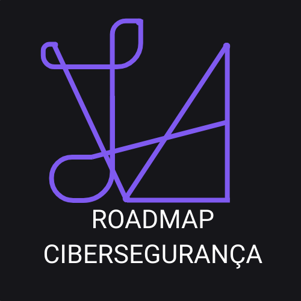

ROADMAP
Esse website informativo é voltado para pessoas que desejam conhecer melhor a área de cibersegurança, entender os fundamentos da profissão, os tipos de hackers e os caminhos iniciais para ingressar nesse campo.
Ver Roadmap"Com sabedoria se constrói a casa, e com discernimento ela se firma." - Provérbios 24:3
Diante do crescimento exponencial de ameaças cibernéticas, e da demanda cada vez maior por profissionais qualificados, é fundamental oferecer caminhos acessíveis que orientem os iniciantes na área. Contudo, a grande quantidade de informações disponíveis na internet pode gerar confusão, desmotivação e até abandono dos estudos, principalmente para quem não sabe por onde começar.
Este Site, portanto, se justifica como uma iniciativa que busca organizar e apresentar um caminho inicial estruturado, ético e motivador para quem deseja seguir na área de cibersegurança — com destaque para o papel do Ethical Hacker. Assim, este roadmap busca mitigar os efeitos da sobrecarga de informações, oferecendo uma direção clara e objetiva que evite a perda de interesse pelo tema abordado.
Cibersegurança é uma das áreas mais promissoras da tecnologia, mas também uma das mais exigentes. O profissional precisa estar em constante atualização de novas ferramentas, linguagens, malwares e ataques que surgem o tempo todo. Além da técnica, é preciso resiliência, disciplina e disposição para aprender sempre. Não é fácil, mas é justamente por isso que poucos dominam, e muitos valorizam.
Ultima atualização: 4 meses
Média salarial Geral:
R$ 1.200
a R$ 35.000
"O preguiçoso deseja e nada consegue, mas os desejos do diligente são amplamente satisfeitos." - Provérbios 13:4